User manual
A logbook for radio contacts (QSOs) that looks up every callsign as you type it — name, country, town, locator, RDA — and shows how far away the station is, the weather there and their local time. Everything below, from the first launch to the last keyboard shortcut.
Русская версия1. First steps
Installing
The program is called R2FEL HamLog — that is the name in its window and the one used in this manual; its icon, installer and folders on disk are R2FEL-LOG.
- Open the
R2FEL-LOG-….dmgfile. - Drag R2FEL-LOG onto the Applications folder in the window that opens.
- Start it from Launchpad or the Applications folder.
-
Run the installer:
R2FEL-LOG-Setup-….exeon Windows 10 and 11 (64-bit);R2FEL-LOG-Setup-…-Windows7-8.exeon Windows 7, 8 and 8.1, and on any 32-bit Windows, 10 included. - Click through the installer — you can choose the folder, or just press Next and Install.
- Start R2FEL-LOG from the desktop shortcut or the Start menu.
The installer isn't signed with a paid certificate, so Windows may show “Windows protected your PC”. Click More info, then Run anyway. Your antivirus may ask the same once.
The app isn't signed with a paid Apple certificate, so on the first launch macOS may say it can't check it for malicious software. Click Done, open System Settings → Privacy & Security, scroll down to the message about R2FEL-LOG and click Open Anyway. After that it opens like any other app.
The first launch
- Settings open straight on the QRZ & HamQTH logins page. It's optional: with the logins, the name, town and locator fill in by themselves as you log a contact; without them the logbook works fully, you just type those details yourself. Fill in any of the books, or none, and close the page with its ✕ — it's always there in settings ⚙, and it won't open by itself again.
- Fill in the top row — MY CALLSIGN, MY RDA and MY QTH LOCATOR. The 📍 button fills in the locator and RDA from where you are (see section 4). They're remembered; you only change them when you operate from somewhere else.
- Pick the band and mode in the MAIN STATION line. They're remembered too.
That's all — you're ready to log.
The window can be stretched by its edges and made full screen — with the button in its title bar, or F11with the green button in its corner, or ⌃⌘F. On a narrow window the form rearranges itself to fit. The size is remembered for next time.
All times in the log are UTC, as radio logs are kept. Your logbook lives on this computer, inside the app — nothing is sent anywhere except the callsign being looked up.
2. The screen at a glance
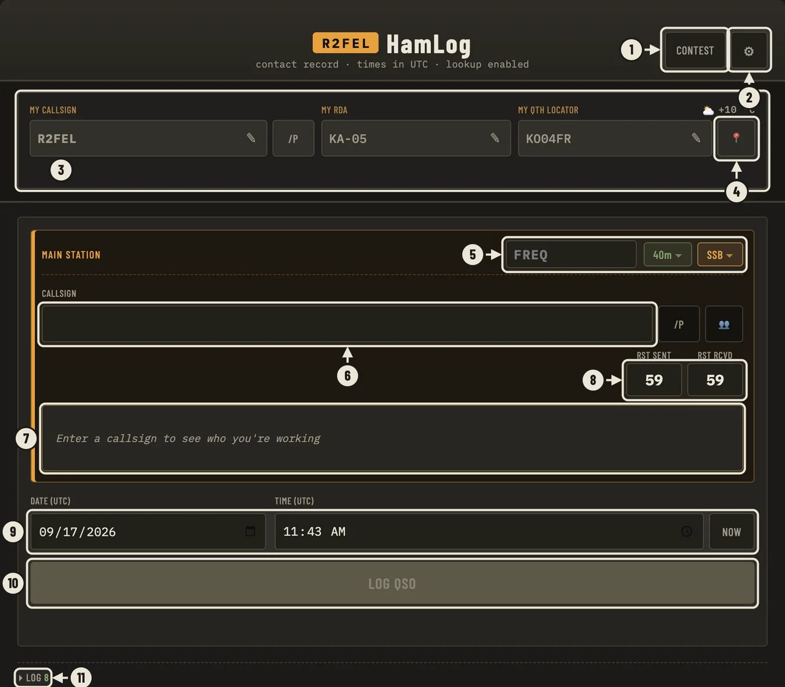
- CONTEST — contest mode: serial numbers instead of group logging (section 7).
- ⚙ Settings — QRZ login, import and export, alphabet and language, this manual.
- Your station — your callsign, RDA district and locator, with the weather where you are.
- 📍 — finds your locator and RDA from your current location.
- Frequency, band, mode of the contact. The band follows the frequency by itself.
- CALLSIGN — the station you're working. Everything starts here.
- Who you're working: name, town, country, distance, weather, local time, and whether you've worked them before.
- RST SENT / RCVD — the reports: yours to them, theirs to you.
- DATE / TIME (UTC) — run by the clock; NOW puts them back on it.
- LOG QSO — saves the contact. Enter does the same.
- ▸ LOG — opens the logbook, with the number of contacts in it.
3. Logging a contact
The whole contact can be done without taking your hands off the keyboard:
- Type the callsign. It's spelled out underneath as you type — ready to read on air.
- A moment later: who it is, where, how far, their weather and local time.
- Tab — report sent (just type over the 59), Tab — report received.
- Enter — logged.
- The form is clear for the next one; frequency, band and mode stay as they were.
The callsign
-
Letters become capitals by themselves, and the keyboard layout doesn't
matter: typed with the Russian layout on,
к2аудturns intoR2FEL— each key gives its Latin letter. -
Under the field the callsign is spelled out phonetically
(Romeo Two Foxtrot…), in Russian for Russian, Belarusian and Kazakh stations
when Russian mode is on. A suffix is read separately,
and the common ones as words:
R2FEL/P→ “… Lima / stroke portable”,R2FEL/QRP/P→ “… Lima / stroke QRP / stroke portable”. In Russian,/Mis also said as a word — «дробь машина». - The lookup starts by itself a moment after you stop typing (and again when you leave the field). The line under the spelling says how it went: ✓ found [qrz.ru], not found, or what went wrong.
- ✕ at the right end of the field clears the callsign and everything found for it. Esc does the same.
-
/P adds
/P(portable) to the callsign, or takes it off again. Rest the pointer on the button and the other suffixes drop down:/QRP(low power),/M(mobile),/MM(maritime mobile),/AM(aeronautical mobile). The one you pick stays on the button, so the next station gets it at a single press.
Who you're working
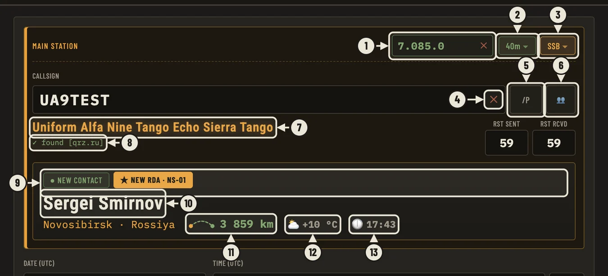
- Frequency in kHz. Type it any way —
7085,7.085,7,085— it becomes7.085.0when you leave the field. ✕ clears it. - Band. Set by itself from the frequency; with no frequency, pick it here.
- Mode: SSB, CW, AM, FM, DMR, D-STAR, C4FM, DIGITAL.
- ✕ — clear the callsign (or Esc).
- /P — add or remove /P; hold the pointer on it for the other suffixes.
- 👥 — starts a group: another station from the same pileup (section 6).
- The callsign spelled out, ready to read on air.
- Lookup result and where it came from — QRZ.RU first, QRZ.com if QRZ.RU doesn't know the station.
- NEW CONTACT — or WORKED BEFORE if they're already in your log (section 5). An amber badge may light up beside it — something you haven't had before:
- ★ NEW COUNTRY — your log hasn't a single contact with that country;
- ★ NEW RDA · SP-03 — a Russian district you haven't had (the country can be a familiar one; for a log that is mostly Russia this is the one that comes up);
- ★ NEW BAND · 40m — you have the country, but never on this band.
- Name of the operator, and under it town and country.
- Distance from you to them. A “≈” in front means their locator is approximate.
- Weather at their locator: sky and temperature.
- Their local time — the clock face shows it too.
Distance and weather need two locators: theirs (from the lookup) and yours (MY QTH LOCATOR). If yours is missing, the card says so.
A station nobody has on file
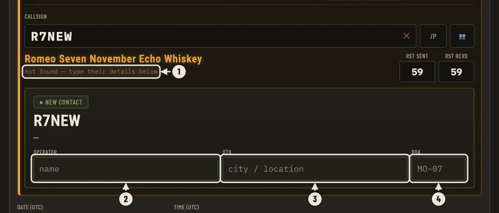
- not found — type their details below: neither QRZ.RU nor QRZ.com knows this callsign.
- OPERATOR — the name, as they give it on air.
- QTH — town or location. (In Russian mode these two are typed in Russian, for any country.)
- RDA — their district, if they say it. The hyphen is added for you:
MO07→MO-07.
Tab goes callsign → operator → QTH → reports, so these fit into the same rhythm.
Band and mode
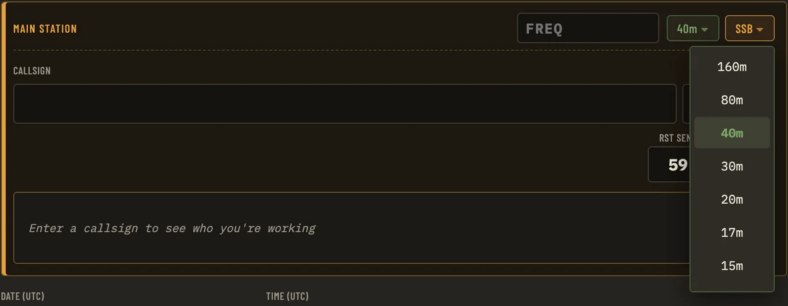
- Bands: 160m, 80m, 40m, 30m, 20m, 17m, 15m, 12m, 10m, 2m, 70cm. Modes: SSB, CW, AM, FM, DMR, D-STAR, C4FM, DIGITAL.
- The digital modes go into an ADIF file the way the standard has them:
MODE=DIGITALVOICEwithSUBMODE=DMR(orDSTAR,C4FM), which LoTW, eQSL and other logs understand; plainDIGITALgoes out asDIGITALVOICEwith no submode. In your own log the mode stays written the way you picked it. - A frequency inside a band always wins:
14195means 20m whatever was picked, and the frequency turns green. A frequency outside every band turns red and leaves the band alone. - Changing the mode sets the usual report — 59 for voice, 599 for CW — but only if the report fields still hold the standard value. A report you typed yourself is never touched.
- Band, mode and frequency stay from one contact to the next and are remembered when you quit.
Reports
RST SENT is the report you give, RST RCVD the one you get. Tab from the callsign lands in them with the value selected, so you just type the new one over it. Tab stops at the last report — it never wanders off into the rest of the window.
Reports take digits only, and as many as the mode's report has: three
(599) for CW, two (59) for every other mode. Letters and
anything else simply don't go in; switching from CW to voice turns
579 into 57.
Date and time
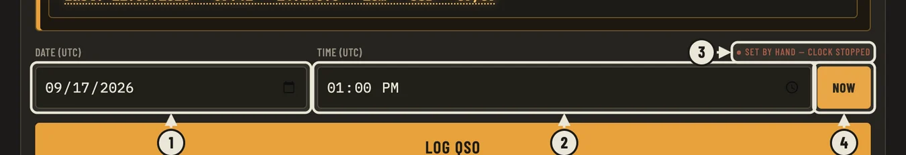
- DATE (UTC).
- TIME (UTC). Both keep up with the clock by themselves.
- As soon as you type into either one, the clock stops for this contact and says so: SET BY HAND — CLOCK STOPPED. Use it to log a contact after the fact.
- NOW (it lights up while the clock is stopped) puts both back to the current time.
Only digits go in — nothing else can be typed into these fields. In English
mode the date and time look the way your computer shows them for your
region (for example 09/14/2026 and 05:25 PM). In Russian
mode they're always 14.09.2026 and 17:25: type just the
digits and the dots and colon appear by themselves — 14092026 becomes
14.09.2026, 1825 becomes 18:25. A digit that
can't be there (a 13th month, a 25th hour) isn't taken; a first digit that can
only mean one thing is completed for you (925 → 09:25),
and a two-digit year becomes a full one when you leave the field
(01.09.26 → 01.09.2026).
Saving
Enter in the callsign or in either report — or the LOG QSO button — saves the contact. You see ✓ QSO LOGGED, and the form clears for the next one: callsign, name and the rest go; frequency, band, mode and your station stay, and the clock runs again.
Three things have to be there, or nothing is logged: their callsign, your own callsign in the station bar, and the band. When one is missing the contact is not saved — the app goes to that field, outlines it in red and says what it is waiting for under the button, for instance ✗ Pick the band (and opens the band list there and then). It used to save such a contact quietly: with no callsign of yours (a grey ? against it in the log) or on no band at all — and a contact like that can go to neither LoTW, eQSL nor HAMLOG.
4. Your station and 📍
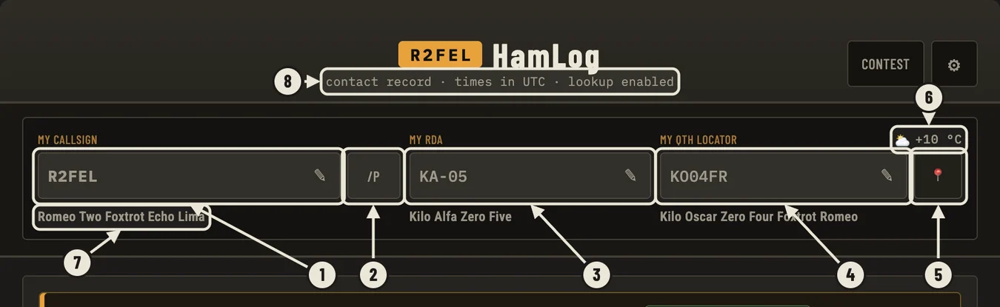
- MY CALLSIGN — your callsign, as it goes into every contact.
- /P — working portable: adds or removes
/Pon your callsign. Rest the pointer on the button to pick/QRP,/M,/MMor/AMinstead. - MY RDA — your RDA district, e.g.
KA-05. TypeKA05, the hyphen appears by itself. - MY QTH LOCATOR — your Maidenhead locator, e.g.
KO04FR. It's always in capitals, however you type it. - 📍 — fill in the locator and RDA from where you are now.
- The temperature and sky where you are.
- Your callsign, RDA and locator spelled out — what you read to the other station. These lines appear once there's a callsign in CALLSIGN, and use the alphabet that suits that station.
- The line under the title says whether lookup is on. When no QRZ login is set it says so, and a click on it opens settings.
Once a field in this bar is filled it goes grey and stops taking the keyboard. Your callsign, district and locator are set once, but the bar sits right under your hand — a stray keystroke used to change the callsign every contact is logged under. To change a field, press ✎ at its end: it opens with the text selected. Leave the field and it closes again.
📍 — where am I?
- Press 📍. The first time, macOS asks: “R2FEL-LOG would like to use your location” — click Allow.
- Press 📍. Windows answers from its own Location setting (see below if it's off).
- The locator is worked out right away; the RDA district is looked up on the RDA map service a second later.
- If the district can't be found automatically, the map (r1cf.ru/rdaloc) opens with your coordinates already copied — paste them there and type the code into MY RDA.
The app opens Settings → Privacy & security → Location for you. Switch on Location services and Let desktop apps access your location, then press 📍 once more. Without a GPS, Windows finds the place by Wi-Fi, so the locator can be a square off — check it.
Windows 7 and 8 can't tell apps where they are at all: type your locator into MY QTH LOCATOR yourself (and the RDA into MY RDA).
macOS doesn't ask twice. Press 📍 again: the app opens System Settings → Privacy & Security → Location Services for you — switch R2FEL-LOG on there and press 📍 once more. If Location Services are switched off for the whole Mac, switch them on at the top of the same page.
5. Worked before
The moment you type a callsign that's already in your log, the app shows it — and opens the logbook on those earlier contacts, without you asking:
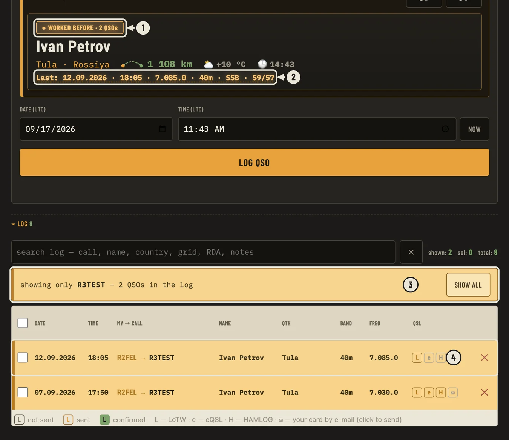
- WORKED BEFORE · 2 QSOs — how many times you've worked them.
- Last: — the most recent of those contacts. Click it for the full list. If that contact was made under another callsign of yours, it ends with · MY CALL and that callsign. Earlier contacts are found across the whole log, whichever of your callsigns they were made under.
- The log shows only this station. SHOW ALL brings back the whole log (the earlier contacts stay highlighted); SHOW ONLY THESE narrows it again.
- The earlier contacts, highlighted.
Clear the callsign and the log folds away again (if it opened by itself); log the contact and it always folds away, ready for the next one. Group stations get the same WORKED BEFORE badge.

6. Pileups: several stations at once
When several stations answer together — a pileup, or a group on a round table — each one can be logged in the same go:
- The first station goes into CALLSIGN, as usual.
- Space — the frame turns into a green group, the main station becomes number 1, and station 2 opens below, ready for the next callsign. Each one is looked up on its own. Space again for the next.
- One too many? Esc in a group station removes it.
- Enter logs everybody at once — one QSO per station, same date, time, band and mode.
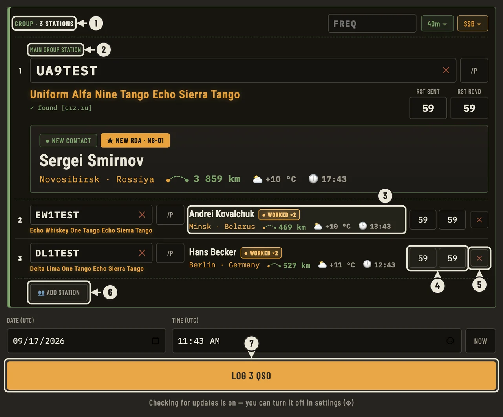
- GROUP · 3 STATIONS — the whole group in one green frame; the number counts every station in it, the main one included. Frequency, band and mode are here too — they're the same for all.
- MAIN GROUP STATION — the main station, number 1. It keeps its big card.
- One line per station: the callsign (spelled out under it, and looked up as you type), the name and NEW or WORKED ×2 — a click on that opens the earlier contacts — then town, distance, weather and local time. A station nobody has on file gets name, QTH and RDA fields right in its line.
- Every station has its own reports.
- ✕ removes the station (or Esc in its callsign).
- 👥 ADD STATION — adds one more at the end. Space in a group station's callsign — or in its reports — adds the next one right below it.
- The button says how many contacts it will log: the main station and every group station that has a callsign; empty ones don't count. Afterwards you see ✓ 3 QSO LOGGED.
A group starts with 👥 beside the callsign, or Space in it. Once the group is open that button steps aside — more stations come from Space and ADD STATION. Remove the last group station and the frame turns amber again, MAIN STATION.
Space, 👥 and ADD STATION add a station only once there's a callsign to add it after — nothing happens on an empty one — and never a second empty station: if one is still waiting for its callsign, the cursor goes there instead.
7. Contest mode
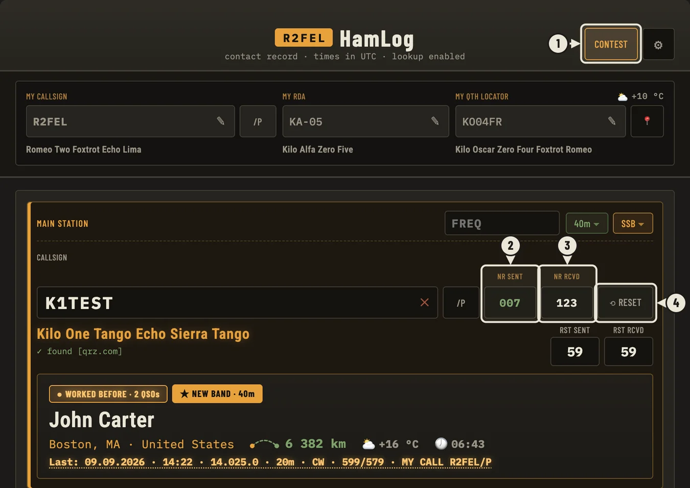
- CONTEST — switches contest mode on and off (it's lit while on). The setting is remembered.
- Serial sent — 001, 002, 003… It counts up by itself after every contact. You can type a different number; counting carries on from it.
- Serial received — the number they give you.
- ⟲ RESET — back to 001, for the next contest. It asks first (in the middle of a contest a stray press would lose your numbering); contacts already logged keep their numbers.
The rhythm: callsign → Tab → their number → Enter. Group logging is off in contest mode — one station at a time. The serial count survives quitting the app, so a contest can run over two evenings.
Your entry — Cabrillo
After a contest you send your log to the organiser, and nearly all of them take one kind of file only: Cabrillo. It isn't ADIF. It is plain text — a header saying who entered and in what category, then one line per contact, always in the same order.
START-OF-LOG: 3.0 CONTEST: RUSSIAN-DX CALLSIGN: R2FEL CATEGORY-OPERATOR: SINGLE-OP CATEGORY-POWER: LOW CATEGORY-BAND: 40M CATEGORY-MODE: SSB GRID-LOCATOR: KO04FR NAME: Aleksei QSO: 7040 PH 2026-09-05 1432 R2FEL 59 001 UA3ABC 59 045 QSO: 7045 PH 2026-09-05 1435 R2FEL 59 002 DL1XYZ 59 112 END-OF-LOG:
A QSO: line reads: frequency in kilohertz, mode (PH for
phone, CW, FM), date, UTC time, your callsign, your
report and the serial you sent, their callsign, their report and
the serial you received. Exactly what contest mode records.
To make one: ⚙ → Export ADIF › → IN WHAT FORM
→ Cabrillo — a contest entry. Four fields appear: the contest's
name as the organiser writes it (CQ-WW-SSB, RUSSIAN-DX; the
common ones are offered in a list), single or multi operator, power, and your name.
Callsign, locator and town come from your settings; band and mode are read off the
contacts themselves. Pick Date range above — the days of the
contest — and CABRILLO ENTRY saves a .log file.
That is what you send, by e-mail or through the organiser's upload form.
The app writes the usual exchange: report and serial. Some contests ask for something else — a CQ zone, a district, an RDA number. Open the file in a plain text editor and put that in the same columns instead of the serials, and check the contest's own rules before sending: what they want, and in which category.
8. The logbook
The log sits under the form, folded away so it doesn't get in the way. ▸ LOG opens and closes it; it also opens by itself for a worked-before station.
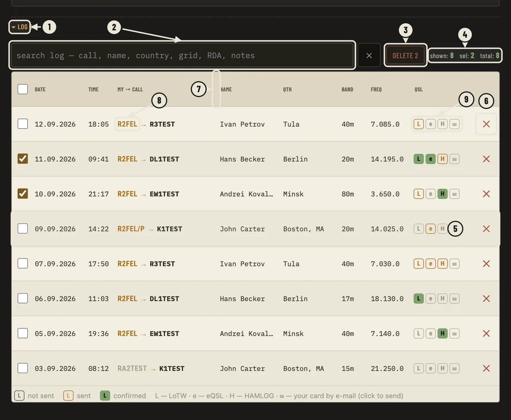
- ▾ LOG — open / close the logbook.
- Search — by callsign, name, country, locator, RDA, QTH, band, mode, frequency or notes. ✕ clears it.
- DELETE 2 — deletes the ticked contacts (after asking).
- Counts: shown, ticked, total.
- Click a contact to open it in the form and change it (see below). The checkbox at the start of a row ticks it; the one in the header ticks everything shown. Shift+click ticks a whole range.
- ✕ — deletes this one contact (after asking).
- Column edges can be dragged to make a column wider or narrower. A double-click on any edge puts them all back.
- MY → CALL — who worked whom: your callsign in amber, an arrow, theirs. An earlier callsign of yours is grey; with “/P”, “/M”, “/QRP” it's still today's and stays amber. A grey “?” — your callsign on that contact isn't recorded (it came from a file that doesn't give it, say); set it in “My callsign on contacts”. On a phone only theirs is shown.
- QSL — confirmations: L LoTW, e eQSL, H HAMLOG, ✉ your card by e-mail (click it to send; more). Grey outline — not sent, amber — sent, green — confirmed. Hover for the dates. A green e opens the eQSL card that came. Sending and checking: “QSL confirmations”.
Changing a logged contact
While an old contact is open, the station bar shows the callsign it was made under — most logs hold contacts from an earlier callsign. The moment the edit is finished, saved or cancelled, your present callsign is back in the bar, and that is what the next contact is logged under.
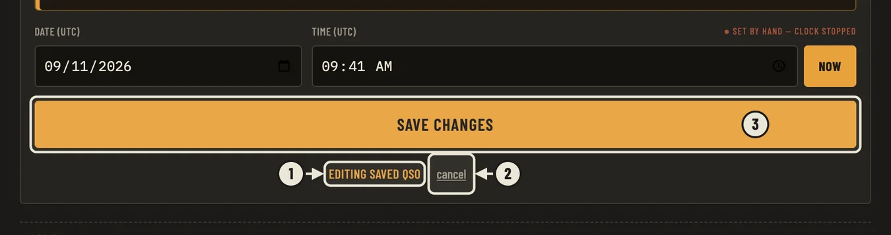
- EDITING SAVED QSO — the form is showing a contact from the log, not a new one. The top row shows the station it was logged under.
- cancel — leave it as it was.
- SAVE CHANGES (or Enter) — save what you changed. Group stations added while editing are logged as new contacts.
An edited contact keeps its QSL marks. But change the callsign, date, time, band or mode of one already sent, and to LoTW, eQSL and HAMLOG it's a different contact — it's queued to go again.
After 15 contacts since your last full export, a line above the log suggests making a backup, and ⚙ glows. Exporting the whole logbook (section 9) resets it.
9. Settings
⚙ at the top right. Settings come in groups. A switch turns a thing on or off; a row with › opens a page of its own, and ‹ Settings or Esc comes back. ✕ at the top right (every page has one) or Esc on the list closes it all. A click beside the window closes nothing, so half-typed work can't be lost by accident. At the foot of every page a 📖 link opens this manual straight at the right place.
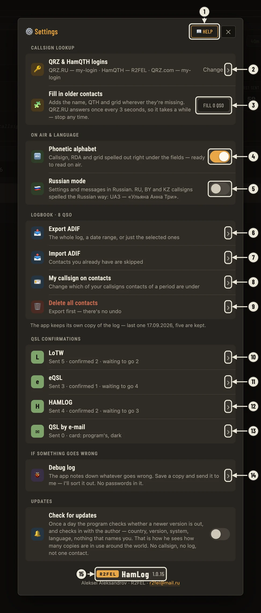
- 📖 HELP — this manual (also F1, or Help in the menu bar).
- QRZ & HamQTH logins — the line under it shows which QRZ.RU, HamQTH and QRZ.com logins are set; click the row to change them.
- FILL … QSO — goes through contacts that are missing a name, country or QTH and fills them in from the callbooks. QRZ.RU allows one request every three seconds, so a big log takes a while; STOP keeps what's done. At the end it says how it went: Filled in 10 · 3 not in the books · 5 had nothing to add — "not in the books" means no callbook knows that callsign at all, "nothing to add" that it was found but held nothing new.
The locator is not part of that count. Abroad it is the one thing nobody has: QRZ.RU keeps no locator field for foreign records, QRZ.com without the paid subscription gives the address but not the coordinates, and HamQTH only knows the stations that registered there. The app works the locator out from the town where it can, which usually succeeds; where it can't, the contact still counts as filled in as long as the name, country and town are there. - Phonetic alphabet — spelling under the fields. Off hides every spelled-out line in the app.
- Russian mode — see section 11.
- Export ADIF › — saves the log to a file (the page is below).
- Import ADIF › — adds contacts from an ADIF file (the page is below).
- My callsign on contacts › — changes which of your callsigns a period's contacts are under (below).
- Delete all contacts › — empties the logbook on this computer. The page offers an export first, then the red button — and the app asks once more.
- LoTW › — sending contacts to LoTW and checking confirmations (“QSL confirmations”). Under the name: how many are sent, confirmed and waiting.
- eQSL › — the same for eQSL.
- HAMLOG › — the same for hamlog.online, by file.
- QSL by e-mail › — your card, the mailbox to send from and the letter (below).
- Debug log › — the app writes down what it does and every error in a file on this computer. SAVE… puts a copy on the Desktop to send to the author; SHOW opens the folder it's in. There are no passwords in it. (Desktop app only.)
- Version, author and where to send feedback and ideas.
Export ADIF
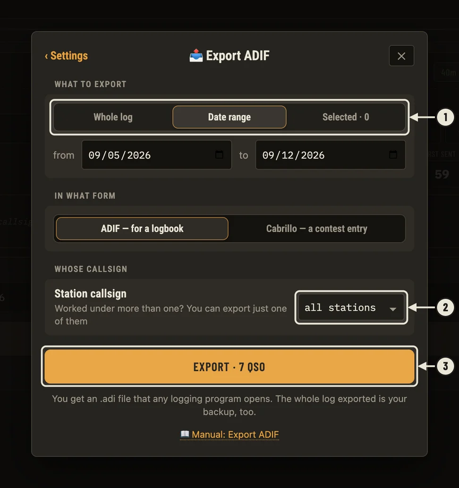
- What to save: Whole log, a Date range (two dates appear), or the Selected contacts — the ones ticked in the log.
- All your callsigns, or just one if you've worked under several.
- IN WHAT FORM: ADIF is the ordinary logbook file — every program reads it, and LoTW, eQSL, HAMLOG and QRZ.com all take it. Cabrillo is a contest entry for the organiser; what it is and how to fill it in is in section 7.
- The button shows straight away how many contacts go into the file. The app asks where to save it, then shows that it's saved and where; SHOW THE FILE opens its folder. Every logging program reads ADIF — the whole log in one file is your backup, too.
Import ADIF
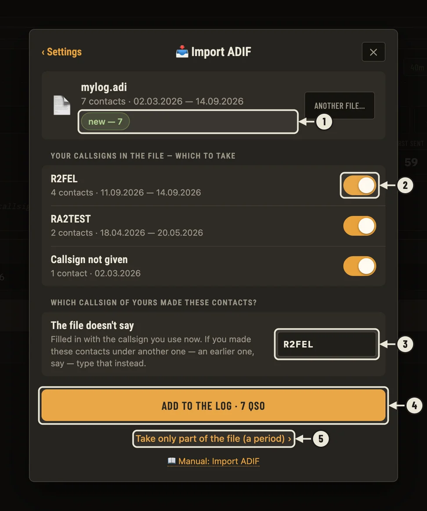
CHOOSE A FILE… — the app shows first what's in the file, and adds nothing until you press the button. It asks only what the file leaves open:
- How many contacts the file has and their dates — and above all, how many are new and how many are in the log already (those aren't doubled; if the file knows more about them, that's filled in).
- More than one callsign of yours in the file — which of them to take. Just one — no list.
- If the file doesn't say which callsign of yours made the contacts, the app asks. The one you use now is filled in; if they were made under another, an earlier one say, type that.
- The button says what will happen: “ADD 7 CONTACTS TO THE LOG”.
- Only part of the file — this link shows two dates.
Contacts already in the log (same callsign, date, time and band) are skipped, not doubled; details missing from them are taken from the file, and fuller text replaces text cut short. A file with some fields in one encoding and some in another (files from HAMLOG can be like that) is read right, and garbled Russian left by earlier imports is put back by itself.
Done — or not
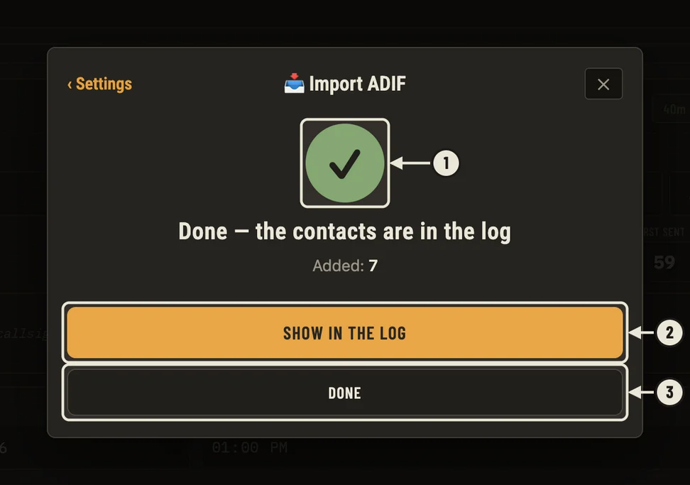
Every action in settings — import, export, sending and checking LoTW, eQSL, HAMLOG, changing your callsign on contacts, clearing the log — ends on a page like this:
- A green tick — it worked; a red cross — it didn't. Underneath: what exactly was done, or why not.
- Where next: after an import, SHOW IN THE LOG; after an export, SHOW THE FILE; when a service turned the login down, CHANGE THE LOGIN.
- DONE — back (after an error, BACK).
Small things, like a login saved, get a short green note at the bottom of the window that goes by itself.
My callsign on contacts
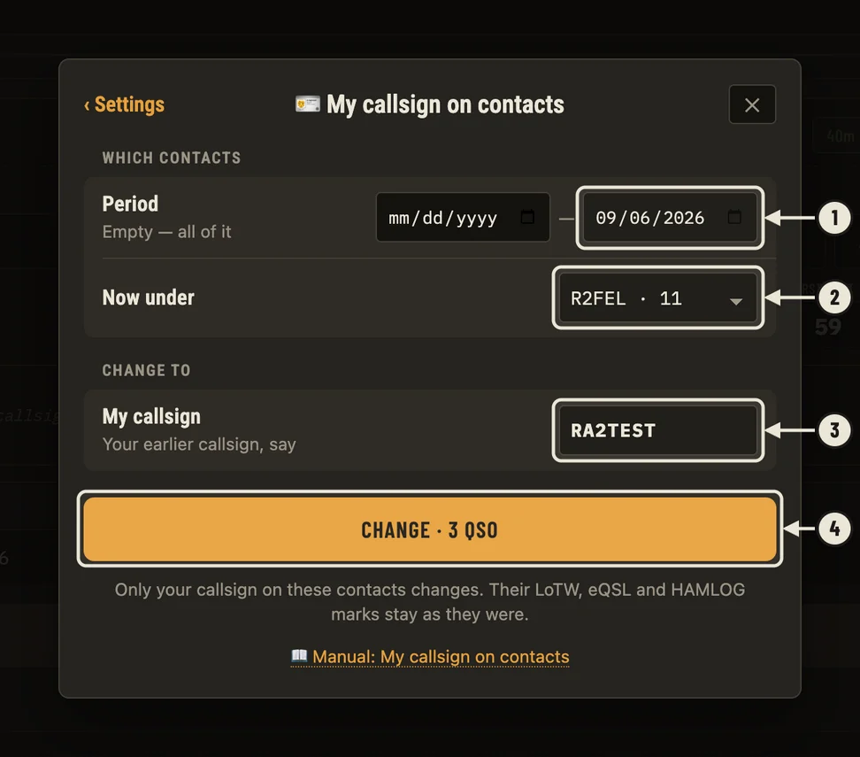
When a log from another program has every contact under one callsign though some were made under an earlier one, this puts it right at once:
- The period. Empty — all of it.
- Which callsign they're under now. “(none)” — the ones with no callsign of yours recorded (a “?” in the log).
- Which one they should be under.
- The button says how many contacts will change.
Only your callsign on them changes; their LoTW, eQSL and HAMLOG marks stay.
QRZ & HamQTH logins
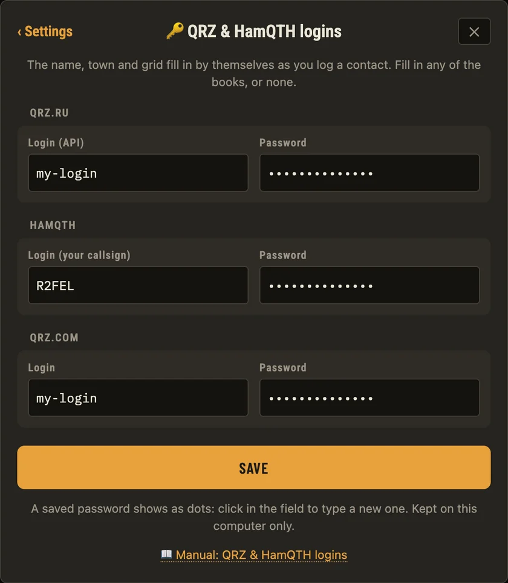
- QRZ.RU — the main one: it knows Russian stations best, with names in Russian and RDA.
- HamQTH — a free callbook (a free account is all it takes). It's asked at the same time as QRZ.RU, so there's no extra wait, and fills in what QRZ.RU lacks: grid, town, full names abroad. It often has the station's e-mail too. The line under the callsign says where the details came from:
found [qrz.ru + hamqth]. - QRZ.com — third: it fills in whatever neither QRZ.RU nor HamQTH had (and when neither knows the callsign, gives all it has). Without a subscription that's not much — a name, a town, a country, sometimes a grid. It's asked only when something is missing.
- The order of trust is QRZ.RU → HamQTH → QRZ.com. Where another source has the same name written out in full (“Ivan” and “Ivan Petrov”), the full one is kept.
- Any of them, or none. The logins are kept on this computer only and used for nothing but lookups. A saved password shows as dots (the app never shows the password itself). To change it, click in the field and type the new one; type nothing and the saved one stays. The LoTW and eQSL login pages work the same way.
Checking for updates
Once a day, at startup, the program quietly checks whether a newer version is out. If one is, a line appears at the foot of the settings — Version 1.0.14 is out — and a small amber dot on the ⚙ button. Clicking the line opens the page to download it from. The program never updates itself: you download the new one and put it over the old one. The logbook and the settings live elsewhere and are not touched.
The same call checks this copy in with the author, so he can see how many copies are in use around the world and in which countries. Exactly four things go out:
- a random number the program made up for itself on first run (only so one computer can be told from another);
- the version of the program;
- the system — Mac or Windows;
- the language — whether Russian mode is on.
The country is worked out from the network at the site's end, and the network address itself is never stored. No callsign, no log, not one contact, no logins and no passwords ever leave your computer.
It starts switched on, and the first launch says so in the line under the form. You can turn it off at any time: ⚙ → UPDATES → Check for updates. With it off, the program doesn't go online for this at all and says nothing about updates.
10. QSL confirmations: LoTW, eQSL, HAMLOG, e-mail
Sending and checking are always buttons, pressed when you choose. What goes is the contacts of your current callsign — “/P”, “/M”, “/QRP” included, under the plain callsign, as usual. Contacts under earlier callsigns of yours stay in the log and go nowhere.
A contact with no band (neither a frequency nor a band filled in) is taken by no service. The app names such contacts under the send button — click the contact in the log and fill in the frequency or band. Contacts with no callsign of yours recorded (a “?” in the log) don't go either — they'd go under the wrong one. With nothing to send, the same line says everything has gone already.
LoTW
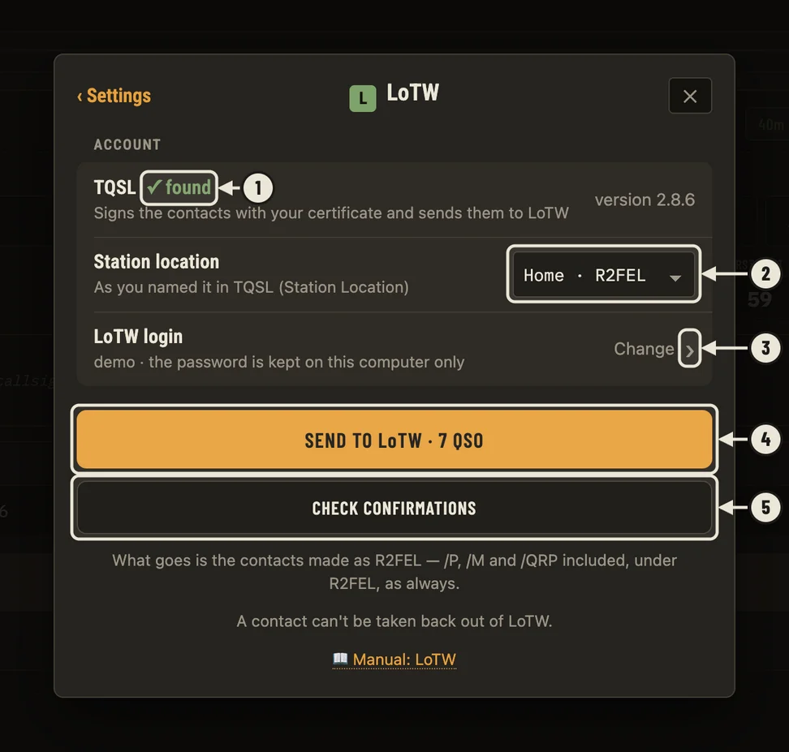
- TQSL — ARRL's free program that signs contacts with your certificate. It has to be installed and set up (certificate and Station Location); the app finds it by itself.
- Station location — one of those set up in TQSL. The contacts made as its callsign are what's sent.
- LoTW login — the login and password of the lotw.arrl.org website (not the certificate's). Needed to check confirmations; kept on this computer only.
- SEND TO LoTW — TQSL signs and sends the contacts LoTW doesn't have yet; the button says how many. Any TQSL sent before, it skips by itself.
- CHECK CONFIRMATIONS — asks LoTW which of your contacts it has (they may have gone from another program, too) and which are confirmed, and sets the L marks. Next time it asks only for what's new.
- A certificate signs contacts of its own span of dates only. If some fall outside it, the app says how many and what the span is — and they're not in the button's count.
- A contact can't be taken back out of LoTW. One edited after sending is queued again; the old one stays there too.
- Sending works in the desktop app only, and only on this computer — not from a phone.
eQSL
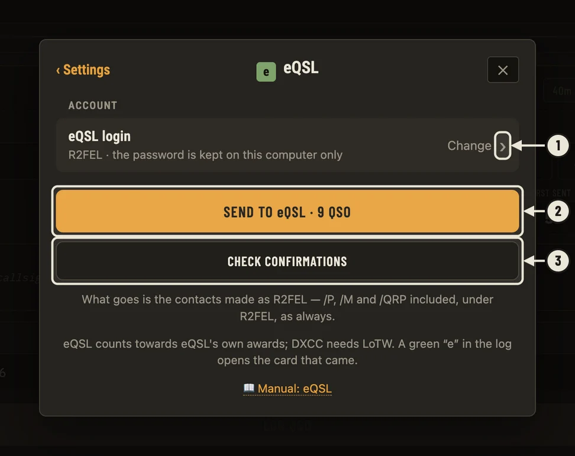
- eQSL login — your eqsl.cc callsign and password; with more than one QTH there, the QTH Nickname too. Kept on this computer only.
- SEND TO eQSL — sends the contacts that haven't gone yet. Ones eQSL already has, it turns down as duplicates — the app says “already there” and marks them sent. If eQSL turns one down for another reason, the app names it.
- CHECK CONFIRMATIONS — fetches the cards that have come, sets the e marks, and brings the card pictures down as well. The button is named the same for LoTW, eQSL and HAMLOG — it always means "go and see what has been confirmed".
The picture of a card that came is right there in the log: click the contact's green e. You don't have to click them one by one — the pictures come by themselves after a check. eQSL gives one card every 11 seconds (their rule, not ours), so thirty cards take about five minutes. It runs in the background: close settings and carry on. The eQSL page counts them off — Card pictures: 4 of 27 — and while they come the same button reads STOP. If it was interrupted (you closed the app), the rest arrive at the next press of that button; the app never goes to eQSL on its own. What has come is kept on this computer, opens at once from then on, and can be saved to a file. Where eQSL has no picture for a contact (their record has a different time or mode), the app remembers and won't ask again until the next check.
eQSL counts towards eQSL's own awards; DXCC needs LoTW.
HAMLOG
hamlog.online doesn't take contacts from programs directly yet, so both ways go by file. On the site both are under My calls: pick your callsign, and there are Upload ADIF and Download ADIF.
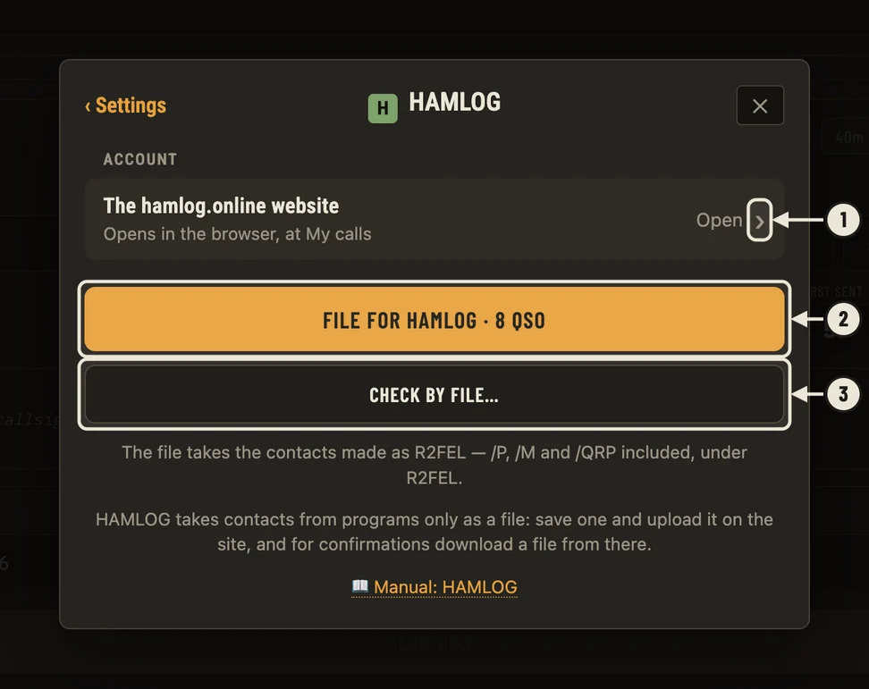
- The hamlog.online website — opens it in the browser, right at My calls.
- FILE FOR HAMLOG — saves the contacts HAMLOG doesn't have yet to a file (the button says how many) and marks them sent. Upload that file on the site with Upload ADIF. Close the save window instead, and nothing is marked.
- CHECK BY FILE… — pick the file the site's Download ADIF gave you. The app marks the contacts HAMLOG has, and the ones an HQSL confirms, with H. It adds no contacts from that file; if HAMLOG has some that aren't in the log, the app says how many — Import ADIF brings those in.
Your QSL card by e-mail
The app can send the other station your QSL card by e-mail — with the contact's details written right into the card. By hand only: one at a time, when you choose. The letter goes from your own mailbox.
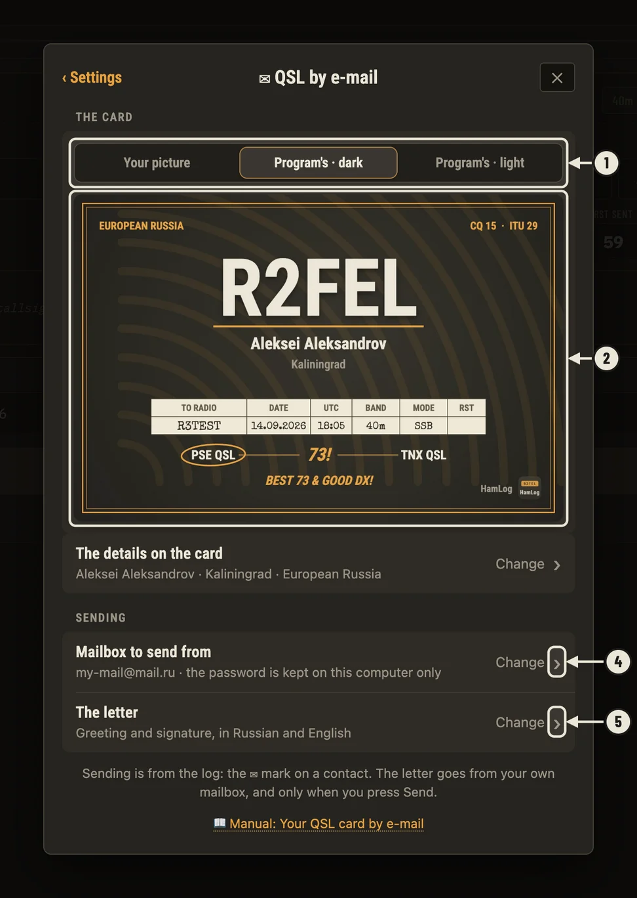
- Which card: Your picture — your own design, the details going into the places laid out for it; Program's · dark or · light — the app draws the card itself from your details, with its small mark in the corner.
- What the card will look like — on a real contact of yours. Their callsign, the date, UTC, band, mode and report are typed in, typewriter-style; TNX QSL is ringed when their confirmation has come (LoTW, eQSL or HAMLOG), otherwise PSE QSL. RDA and grid are the ones logged with the contact.
- For the program's card: your name, town, country and zones. TAKE FROM THE CALLSIGN BOOKS fills them in from your callsign.
- Mailbox to send from — the address and an app password (not your usual mail password: mail services give programs a separate one). For Mail.ru: Settings → Security → Passwords for external applications → Add, tick “Sending mail (SMTP)”. For Yandex, Gmail and others the steps appear once you type the address. CHECK THE MAILBOX LOGIN logs in without sending anything.
- The letter — your name for the signature, the subject and greeting in Russian (for RU, BY, KZ) and English (for everyone else). Their name, callsign, the date, band and your signature are put in by themselves.
Your picture: CHOOSE… and the app keeps a copy. Then, once, you show it where on the picture each detail is printed: the PLACE THE FIELDS… button beside it. Until there is a layout, the program's card goes instead.
Placing the fields on your card
The window shows your card as it will really go out — not a mock-up but the very same drawing the letter carries, with boxes outlined on top. It goes like this:
- Along the top are the fields: callsign, date and time, band, mode, report, your RDA, your locator, and the two rings, PSE QSL and TNX QSL. Click the one you are placing (it turns amber).
- Drag a box on the card where it belongs. The real text appears inside it at once, so you can see whether it fits.
- Landed wrong? Drag the box itself and it moves. REMOVE FIELD takes the selected one off, START AGAIN clears them all.
- The lettering is sized from the height of the box: want it bigger, draw it taller. If the text is too wide for the box it shrinks to fit.
- Light lettering / Dark lettering is about your RDA and locator: white with a shadow reads on a photograph, dark reads on a pale card. The callsign, date and the rest of the table are always printed dark, typewriter style.
- Save the layout. You needn't place all nine — whatever you leave out simply isn't printed.
A layout belongs to the picture itself (the app knows it by the file's fingerprint), so you can keep several cards and switch between them, each with its own layout.
A card remembers whose it is. When you lay a picture out, the program notes the
callsign then in MY CALLSIGN — it is the one printed on the card, after all.
Change your callsign later and contacts made under the new one get the program's own card
instead of your picture with the old callsign on it; the send window says why. Have a card printed with
the new callsign, choose it and lay it out, and everything falls back into place. Suffixes like
/P or /M don't count as a different callsign — the card stays yours.
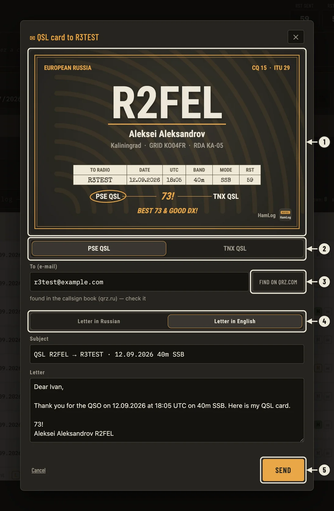
The card goes out 1050 pixels on the long side — the usual QSL 140 × 90 mm when printed — and the letter weighs about a third of a megabyte. Their name is written the way the letter is: in Russian in a Russian letter, in Latin in an English one.
Sending is from the log: the ✉ mark in a contact's QSL column.
- The card — exactly as it will go.
- PSE QSL or TNX QSL — which one to ring.
- Their address. The app fills it in if this or an earlier contact had it, or HamQTH has it; otherwise FIND ON QRZ.COM opens their page — copy the address from there. An address you type is remembered for that callsign.
- The letter in Russian or English. English unless Russian mode is on and the callsign is a Russian, Belarusian or Kazakh one. Switch it here, and edit the subject and the text while you're at it.
- SEND — the letter with the card goes; the contact's ✉ turns amber, with the date and address on hover. It can be sent again.
11. Russian mode
The Russian mode switch in settings changes several things at once:
-
Callsigns of Russia, Belarus and Kazakhstan are spelled in the
Russian phonetic alphabet —
UA3XQVis read “Ульяна Анна Три Знак Щука Жук” — and your own callsign, RDA and locator follow the same alphabet while you work such a station. Everyone else stays in NATO spelling. - Names and towns of those stations are shown in Russian.
- The name and QTH you type for a station nobody has on file are always in Russian — whatever its country (“John” is written «Джон»), and even if the keyboard is in English.
- Settings, the windows opened from them, and the notes about 📍 and backups are in Russian — and so is this manual.
- Date and time are shown as
14.09.2026and17:25— 24-hour, whatever the computer is set to.
With it off, nothing Cyrillic reaches your log: names and towns from QRZ.RU are shown in Latin letters (Тула → Tula). The labels of the logging form itself — CALLSIGN, LOG QSO — stay in English in both modes.
12. Keyboard shortcuts
| Key | Where | What it does |
|---|---|---|
| Enter | Callsign, a group callsign, reports, serial, frequency | Logs the contact — with every group station. |
| Tab | Callsign and on | Next field of this contact: (serial received) → (operator, QTH if not found) → report sent → report received. Stops at the last one. |
| Shift+Tab | The same fields | Back along the same chain. |
| Space | Callsign or reports — the main station's or a group station's | Adds the next station of the pileup (not in contest mode, and not while that station's callsign is empty). So: callsign, Tab, report, Space, next callsign… |
| Esc | In a group station | Removes that station. |
| Esc | Elsewhere in the form | Clears the callsign and everything found for it; the clock runs again. |
| Esc | A menu or window is open | Closes it — settings, a list, this manual — and nothing else. |
| F1 | Anywhere | Opens this manual. |
| F11 | Anywhere | Full screen and back. |
| ⌃⌘F | Anywhere | Full screen and back. |
| Shift+click | A checkbox in the log | Ticks (or unticks) every contact between this one and the last one clicked. |
| Double-click | A column edge in the log header | Puts every column back to its standard width. |
| Right-click | Any field | The usual menu: copy, paste, cut, select all. In a password field, paste only — a password doesn't leave the program. |
| ⌘ C / V / X / Z / A | Any field | Copy, paste, cut, undo, select all. |
| ⌘ M / H | Anywhere | Minimize the window / hide the app. |
| ⌘ W | Anywhere | Closes the window; the app stays in the Dock — click its icon to bring it back. |
| ⌘ Q | Anywhere | Quits. Everything is already saved. |
| Ctrl C / V / X / Z / A | Any field | Copy, paste, cut, undo, select all. |
| Alt+F4 | Anywhere | Closes the app. Everything is already saved. |
| Win+↓ | Anywhere | Minimizes the window. |
Callsign, RDA and locator fields don't care about the keyboard layout — there's no need to switch to English to type a callsign.
13. Backups and moving to another computer
- Every contact is saved the moment it's logged — there's no “save” to forget. Your log lives inside the app on this computer.
- The app keeps its own copy. Once a day at the first launch — and straight after an import, and after every twenty new contacts — the whole log is written as an
.adifile in the app's own folder; the last five are kept and older ones go by themselves. Nothing to switch on and nothing to answer: the foot of the LOG group in settings says when the last copy was made. It is there for the day the log inside the app goes (a reinstall, a fault): you take the newest file and import it. - You still want a copy of your own. The automatic one sits on this same computer and goes with it. A real backup is a file you have put somewhere else:
- Backup: settings ⚙ → Export ADIF › → Whole log → EXPORT. Keep the
.adifile somewhere safe (iCloud Drive, a USB stick). - Another computer — Mac or Windows: install the program there, then settings → Import ADIF › → CHOOSE FILE…, pick your exported file — then the button at the bottom, which says how many contacts will be added: ADD TO THE LOG · 128 QSO.
- The same file opens in any other logging program, and is what you upload to LoTW, eQSL or QRZ.com logbooks.
14. Removing the app
Dragging the app to the Trash leaves its logbook and settings behind on the Mac. To remove everything:
- In the menu bar: R2FEL-LOG → Uninstall R2FEL HamLog…
- The app says how many contacts you have and offers Export ADIF First… — do that if you want to keep them.
- Uninstall: the app, the logbook, the QRZ login and all settings go to the Trash, and the app quits.
Until you empty the Trash, everything can still be dragged back.
- Windows 10 and 11: Settings → Apps → Installed apps, find R2FEL-LOG, ⋯ → Uninstall. Windows 7 and 8: Control Panel → Programs and Features, R2FEL-LOG, Uninstall.
- The uninstaller asks whether to remove the logbook, the QRZ login and the settings too. No (the default) keeps them — for reinstalling later, they'll be there. Yes sends them to the Recycle Bin. Export ADIF first if you want to keep your contacts.
Until you empty the Recycle Bin, the logbook folder can still be restored from it.
15. If something doesn't work
Nothing is found / “lookup off”
Check the logins in settings (the QRZ & HamQTH logins row) and the internet connection. A callsign neither database knows is simply not found — type the details by hand.
No distance or weather on the card
Fill in MY QTH LOCATOR (or press 📍). If the station's own record has no locator, the card says so — there's nothing to measure from.
📍 shows an error
See section 4: location must be switched on for the computer and allowed for R2FEL-LOG.
Something else went wrong — the debug log
Whatever happened — an error, a crash, a window gone blank — the app has written
it down. Open settings ⚙ → Debug log › → SAVE…,
and send the file from the Desktop to
r2fel@mail.ru with a line on what you
were doing. The file itself is
~/Library/Logs/R2FEL-LOG/r2fel-log.txt%APPDATA%\R2FEL-LOG\logs\r2fel-log.txt
— if the app won't even start, it can be found there by hand.
The time looks wrong
It's UTC, not your local time — as every radio log is kept. If SET BY HAND is showing, the clock is stopped: press NOW.
“Can't be opened” on the first launch
See section 1: System Settings → Privacy & Security → Open Anyway.
“Windows protected your PC” when installing
See section 1: More info → Run anyway.
Squares instead of some icons (Windows 7)
Windows 7 lacks the colour symbols used on some buttons (⚙, 📍, 👥, 📖), so they may look plain or be missing. The buttons work just the same; on Windows 10 and 11 they look as in the pictures here.